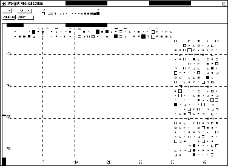

The weight display window is a separate window specialized for displaying the weights of a network. It is called from the manager panel with the button, or by typing Alt-w in any snns window. On black-and-white screens the weights are represented as squares with changing size in a Hinton diagram, while on color screens, fixed size squares with changing colors (WV-diagrams) are used. It can be used to analyze the weight distribution, or to observe the weight development during learning.
Initially the window has a size of 400x400 pixel.The weights are represented by pixels on B/W and pixels on color terminals. If the net is small, the square sizes are automatically enlarged to fill up the window. If the weights do not fit into the window, the scrollbars attached to the window allow scrolling over the display.
These settings may be changed by the user by pressing the
and buttons in the upper part of the
window.  enlarges the weight square by one pixel on each
side, while
enlarges the weight square by one pixel on each
side, while  shrinks it.
shrinks it.
The setup panel lets the user change the look of the display further. Here the width of the underlying grid can be changed. If the grid size is bigger than the number of connections in the network, no grid will be displayed. Also the color scale (resp. size scale for B/W) can be changed here. The initial settings correspond to the SNNS variables max_weight and min_weight.
In a Hinton diagram, the size of a square corresponds to the absolute size of the correlated link. A filled square represents positive, an square frame negative links. The maximum size of the squares is computed automatically, to allow an optimal use of the display. In a WV diagram color is used to code the value of a link. Here, a bright red is used for large negative values and a bright green is used for positive values. Intermediate numbers have a lighter color and the value zero is represented by white. A reference color scale is displayed in the top part of the window. The user also has the possibility to display the numerical value of the link by clicking any mouse button while the mouse pointer is on the square. A popup window then gives source and target unit of the current link as well as its weight.
For a better overall orientation the numbers of the units are printed all around the display and a grid with user definable size is used. In this numbering the units on top of the screen represent source units, while numbers to the left and right represent target units.